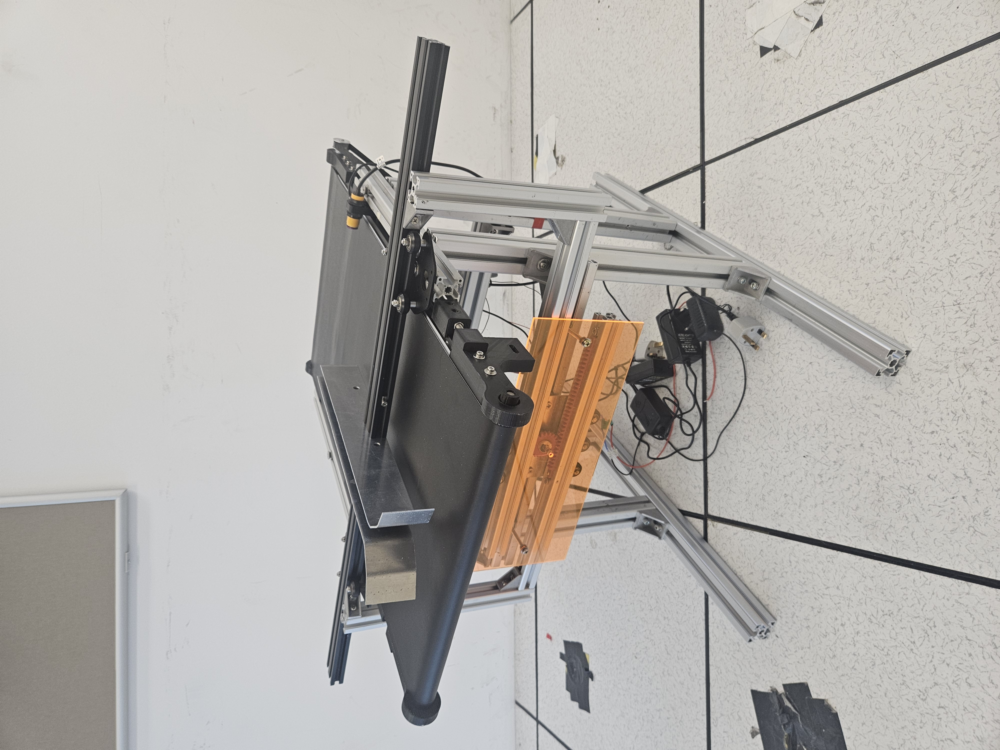
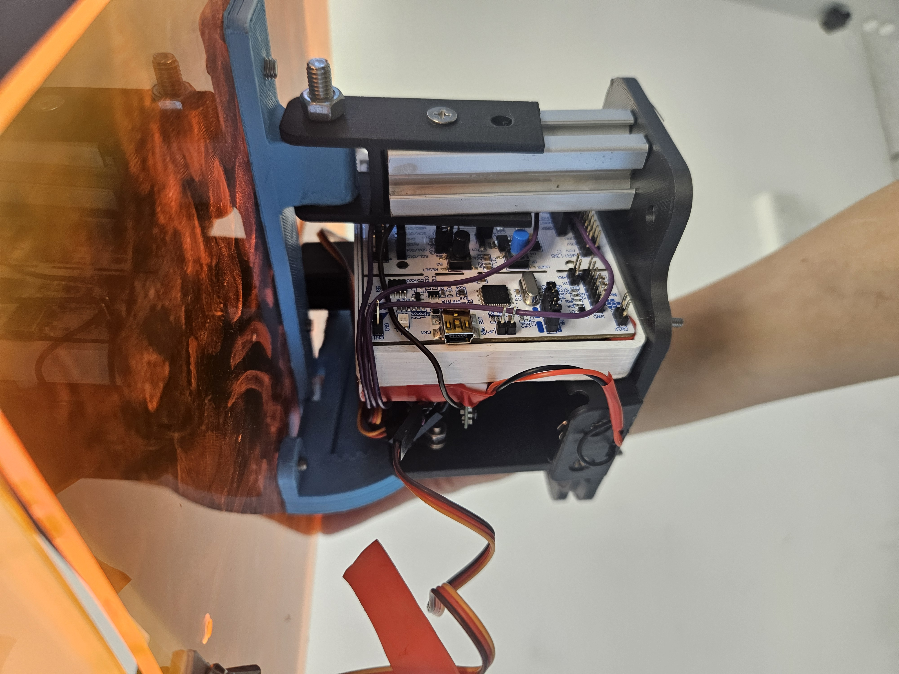
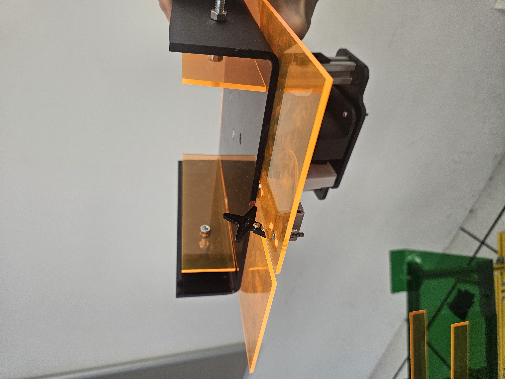
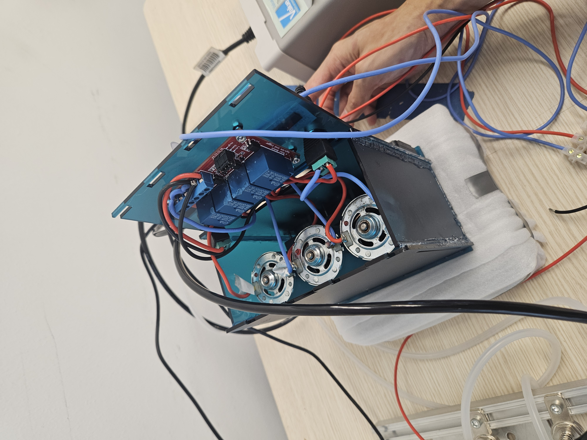
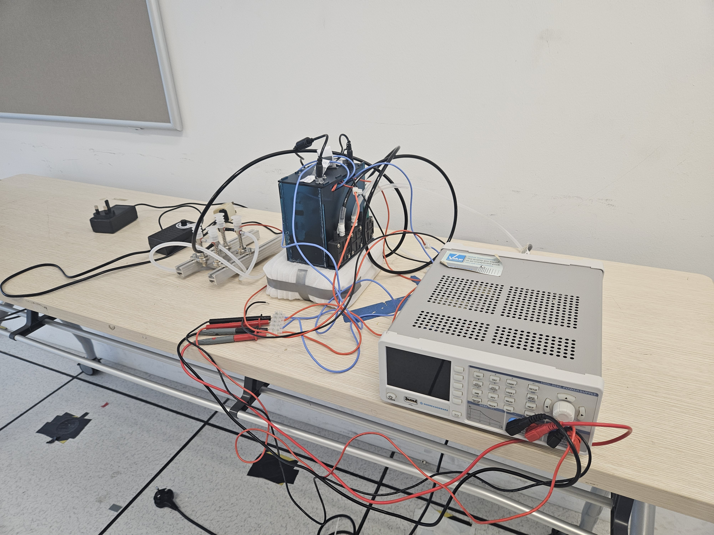
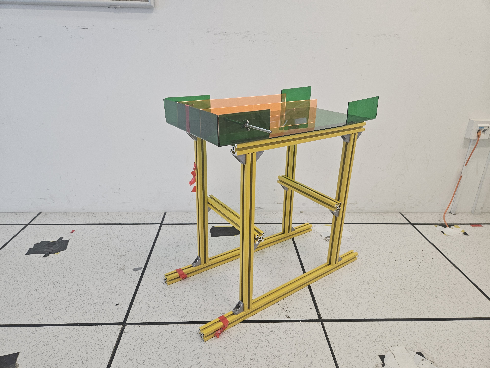

Project 4: Assembly Line Automation
In collaboration with Bolloré Logistics, this project focuses on problem statement: "Simulate assembly line automation. Using robotics and machines, the students can also model out before and after automation to show the productivity improvement and reduction of reliance on human resources."
Learning Objectives
- Master the ROS2 Framework including Control, MoveIt2, and Gazebo.
- Showcase problem-solving skills and independent learning in new technologies.
- Apply Project Management skills to maintain project scope, mitigate risks, and ensure timely deliverables.
Learning Outcomes
The system

Demonstration of prototype: Modular Assembly Line (MAL) verifying test cases with with Technical Documentation
- Testcase 6: Simulate MAL in visual components with positive throughput
- Testcase 9: Demonstrate Robotic Arm Kitting (UR10 pick & place SKU into SKU boxes)
- Testcase 3: Demonstrate LIMO Autonomous Mobile Robot (AMR) collecting and dropping off carton boxes
- Testcase 10: Demonstrate Robotic Arm Cartoning (UR10 pick & place SKU boxes into carton boxes)
Technical Development
Developed a script in Python to configure the 6-axis movement of a UR10 robot in RoboDK.


System Architecture Design
Applied Arcadia and Capella methodologies to design solution architectures.

Prototyping & Fabrications
Innovated a variable conveyor belt system capable of handling high-mix low-volume (HMLV) products.


Fabricated a mount for the LIMO robot, integrating an STM32F303RE MCU for servo motor control, allowing the opening/closing of flaps and tilt adjustments.


Designed a housing for a DC vacuum motor used to generate suction for the end-effector.


A static mechanical conveyor belt was also used to simulate variable conveyor belt functionality during demonstrations.
